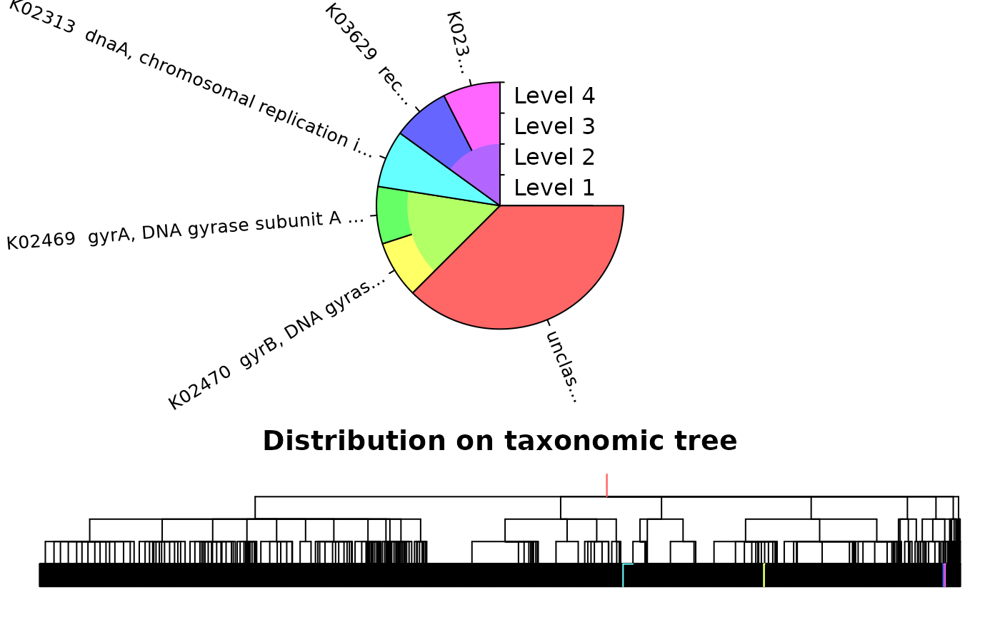

Gene Calling and Annotation with DECIPHER
Aidan Lakshman1
Source:vignettes/GeneCallingAnnotation.Rmd
GeneCallingAnnotation.RmdGene Calling and Annotation
At this point, we’ve learned how to read in some genomic data, and have gained some basic familiarity working with it. The next step in our pipeline is to take a set of genomes, identify the coding regions in them, and predict the function of as many genetic regions as we can. We’ll start off by identifying the genes themselves.
Finding Genes
In the interest of time, we’re going to be using plasmid sequences
from a dataset of Archaeal genomes. Plasmids are small enough that we
can quickly execute our queries. We’ll begin by reading in the data from
a .fasta file, as we did in the previous section.
# Load a single complete Micrococcus genome
datafile <- system.file('extdata', 'GeneCalling', 'SingleSeq.fa.gz',
package='CompGenomicsBioc2022')
dnaGenome <- readDNAStringSet(datafile)
aaGenome <- translate(dnaGenome) Next, we’re going to identify the genes in the first sequence in our
sequence set. We’ll mark this as our ‘genome’ (although it’s really a
plasmid), and predict genes within it using FindGenes()
from the DECIPHER package.
FindGenes() returns a Genes object with
information on where genes start and end in the genome. We can then
extract the sequences corresponding to each gene using the
ExtractGenes() function.
geneLocs <- FindGenes(dnaGenome)
genes <- ExtractGenes(geneLocs, dnaGenome, type='AAStringSet')
# `Genes` object
geneLocs## Genes object of size 2,195 specifying:
## 2,195 protein coding genes from 99 to 4,653 nucleotides.
##
## Index Strand Begin End TotalScore ... Gene
## 1 1 0 256 1803 376.25 ... 1
## 2 1 0 2554 3669 262.68 ... 1
## 3 1 0 3691 4905 225.54 ... 1
## 4 1 0 4898 5461 71.87 ... 1
## 5 1 0 5819 7981 557.28 ... 1
## 6 1 0 8050 10746 695.28 ... 1
## ... with 2,189 more rows.
# Sequences corresponding to each gene
genes## AAStringSet object of length 2195:
## width seq
## [1] 516 MVADQAVLSSWRSVVGSLEDDARVSARLMGFV...RKIRELMAERRTIYNQVTELTNEIKRKQRGA*
## [2] 372 MKFTVERDILTDAVSWAARSLSPRPPVPVLSG...SAPKPALLTGVNQEDGVVSDYRYLVMPVRIA*
## [3] 405 MYLSHLTVADFRSYRWADLELTPGSTVLLGAN...RQDAEGSEAVAAAAPVEGDIREPRREGGADG*
## [4] 188 MAETPAPFEPDRPDLALVQLRRVREAARERGE...TRIEVAGPQAPSWRKGPRTVRGGRGPRDTYG*
## [5] 721 MVDAMPENPAEEPTAASAAPNPEAVPDAVGQP...DAVFSMLMGEDVESRRTFIQQNAKDIRFLDV*
## ... ... ...
## [2191] 195 MSAENVTPAPEAEDAVVETPAGQGSRVAEQDD...KIVHDVVADAGLTSESEGEGARRHVVISADD*
## [2192] 333 MFEAILSPFRWLMSWLLGAFHSILEFAGLPAD...QAGRGGAVLNGEVVRQSGQRVQPQRKNRRRK*
## [2193] 123 MTVTPSPFVVLEPSREWGPLRALPSALLAGLL...PPGHRRWPPGRQPRILALNHPPIPPDLPQED*
## [2194] 133 MLPRDRRVRTPAEFRHLGRTGTRAGRRTVVVS...AEADYALLRRETVGALGKALKPHLPAASEHA*
## [2195] 46 MTKRTFQPNNRRRARKHGFRARMRTRAGRAILSARRGKNRAELSA*Removing Non-Coding Regions
FindGenes() finds the genes themselves, but these may
not encode coding regions. We’re more interested in the regions that are
actually translated into proteins, since these are what we’ll try to
annotate later. For this, we’ll use the FindNonCoding()
function.
FindNonCoding() is used with three main datafiles
depending on the data to analyze:
-
data("NonCodingRNA_Archaea")for Archaeal data -
data("NonCodingRNA_Bacteria")for Bacterial data -
data("NonCodingRNA_Eukarya")for Eukaryotic data
These include pretrained models with common non-coding patterns for
the relevant domain of life. If these pretrained models are insuffient,
you can train your own dataset using LearnNonCoding()
(though this is outside the scope of this workshop).
Once we’ve run FindNonCoding(), we can use
ExtractGenes() as before to pull out the coding regions.
This will result in more accurate gene calling than just running
FindGenes() directly.
data("NonCodingRNA_Bacteria")
ncRNA <- NonCodingRNA_Bacteria
geneticRegions <- FindNonCoding(ncRNA, dnaGenome)
## Find annotations of noncoding regions
annotations <- attr(geneticRegions, "annotations")
geneMatches <- match(geneticRegions[,"Gene"], annotations)
noncodingAnnots <- sort(table(names(annotations)[geneMatches]))
# Find Genes
genes <- FindGenes(dnaGenome, includeGenes=geneticRegions)
# What noncoding regions have we found and successfully annotated?
noncodingAnnots##
## 5'_ureB-RF02514 Flavo_1-RF01705
## 1 1
## FMN_Riboswitch-RF00050 Glycine_Riboswitch-RF00504
## 1 1
## RNase_P_class_A-RF00010 SmallSRP-RF00169
## 1 1
## tmRNA-RF00023 tRNA-Asn
## 1 1
## tRNA-Asp tRNA-Cys
## 1 1
## tRNA-His tRNA-Phe
## 1 1
## tRNA-Trp tRNA-Tyr
## 1 1
## rRNA_16S-RF00177 rRNA_23S-RF02541
## 2 2
## rRNA_5S-RF00001 SAM_Riboswitch-RF00162
## 2 2
## TPP_Riboswitch-RF00059 tRNA-Gln
## 2 2
## tRNA-Lys tRNA-Met
## 2 2
## tRNA-Val tRNA-Glu
## 2 3
## tRNA-Ile tRNA-Pro
## 3 3
## tRNA-Thr tRNA-Ala
## 3 4
## tRNA-Arg tRNA-Gly
## 4 4
## tRNA-Ser tRNA-Leu
## 4 5
# Genes in the genome
genes ## Genes object of size 2,274 specifying:
## 2,216 protein coding genes from 75 to 4,653 nucleotides.
## 58 non-coding RNAs from 73 to 3,088 nucleotides.
##
## Index Strand Begin End TotalScore ... Gene
## 1 1 0 256 1803 365.17 ... 1
## 2 1 0 2554 3669 254.93 ... 1
## 3 1 0 3691 4905 227.03 ... 1
## 4 1 0 4898 5461 75.07 ... 1
## 5 1 0 5819 7981 543.99 ... 1
## 6 1 0 8050 10746 681.74 ... 1
## ... with 2,268 more rows.Classification with IDTAXA
We now have a set of coding regions. Our last step for this section
is to try to annotate their function. This functionality is done with
IdTaxa() from the DECIPHER package.
IdTaxa() requires a training set, which can be obtained
in two ways. The first is to download them from DECIPHER’s downloads
page, which contains prebuilt training sets for a variety of
organisms. We’ll be using an Actinobacteria dataset obtained from this
website.
The other method is to build a training set yourself using
LearnTaxa(). This will not be covered in this workshop, but
more information is available on the DECIPHER documentation
for people that are interested.
In the interest of time, we’ll just classify the first 10 genes. Note
that our training set for IdTaxa() is trained on amino
acids, so we have to provide it with amino acid sequences. This is why
we
# Find amino acid sequences corresponding to found genes
geneSeqs <- ExtractGenes(genes, dnaGenome, type="DNAStringSet")
geneSeqs <- translate(geneSeqs)
# `trainingSet` is loaded from extdata/GeneCalling/IdTaxaTraining
# It's broken up into pieces because of file constraints on GH
# You can rebuild it using the "RecombineIdTaxaTraining.R" file
# (just substitute the appropriate value for the first line),
# or you can download it directly from the DECIPHER website.
# Classify!
ids <- IdTaxa(geneSeqs[1:10], trainingSet)Once we’ve finished calculating, we can either view the annotations directly, or plot them as a taxonomy.
# Looking at all results
ids## A test set of class 'Taxa' with length 10
## confidence taxon
## [1] 100% Root; 09130 Environmental Information Processing; 09132 Signa...
## [2] 100% Root; 09120 Genetic Information Processing; 09124 Replication...
## [3] 99% Root; 09120 Genetic Information Processing; 09124 Replication...
## [4] 29% Root; unclassified_Root...
## [5] 96% Root; 09180 Brite Hierarchies; 09182 Protein families: geneti...
## [6] 100% Root; 09180 Brite Hierarchies; 09182 Protein families: geneti...
## [7] 35% Root; unclassified_Root...
## [8] 90% Root; unclassified_Root...
## [9] 40% Root; unclassified_Root...
## [10] 28% Root; unclassified_Root...
# Looking at a specific entry
ids[[1]]## $taxon
## [1] "Root"
## [2] "09130 Environmental Information Processing"
## [3] "09132 Signal transduction"
## [4] "02020 Two-component system [PATH:ko02020]"
## [5] "K02313 dnaA, chromosomal replication initiator protein"
##
## $confidence
## [1] 100 100 100 100 100
# Plot the distribution of results
plot(ids, trainingSet)